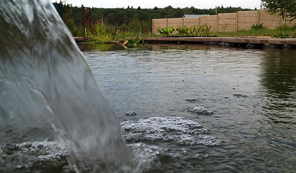
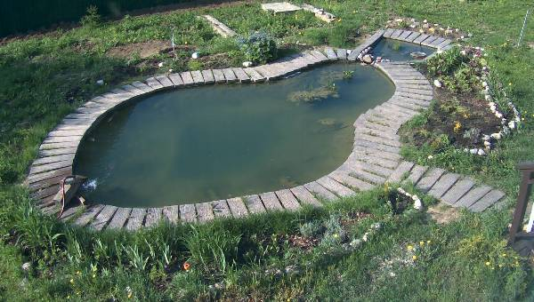
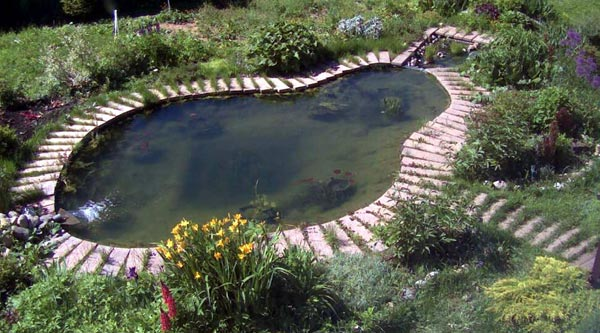

Декоративный пруд на даче
Содержание
Я выкопал на участке пруд лопатой. Завел там рыбок и кувшинки. Для поддержания уровня воды сделал водопадик и циркуляцию воды через фильтр. Все вышло почти случайно после прокладки дренажных труб вокруг дома, и после удаления огромного куста ивы. Смотрите страничку Как на месте куста получился пруд. После куста осталась некрасивая большая яма. Чтобы труд не пропал напрасно её решили превратить в пруд.
Аквариум у меня уже много лет, и я кое-что понимаю в биологическом равновесии, фильтрах, в содержании рыбок и растений. Я решил, что этот опыт поможет. Пруд - это большой аквариум, в котором можно поселить рыбок и болотные растения. Пруд, как и аквариум, нужен для красоты. И правда, получилось красиво, но некоторые аквариумные идеи не подошли.
Форма пруда
Яму нужно было увеличить, чтобы добиться гармоничного размера, не слишком маленького, и не слишком большого по сравнению с домом и участком. Выкопанную землю и глину использовали для улучшения горизонтальности берега пруда. Уровень примерно задавался колышками, временно забитыми вдоль будущего берега.
2014-04-12 Колышками отмечены линия и уровень будущего берега
При диаметре ямы 5м я решил, что это достаточно гармонирует с домом (9х9м). Обсудив и обсмотрев яму со всех сторон, мы решили, что она слишком круглая, и я выкопал ещё неглубокую ямку по колено, так что в плане получилась форма груши.
Укрепление берега
Комки глины, которые я навалил по уровню берега через некоторое время должны были осесть. При этом уровень берега испортится, и часть берега может соскользнуть в яму. Кроме того, глина скользкая и грязная. Упрочняющая и украшающая газонная травка вырастает не сразу. Поэтому я решил сделать берег в виде жёсткой деревянной конструкции, которая должна продержаться несколько лет, пока грунт берега не укрепится и не прорастет корнями растений.
Я сделал прочную кромку пруда (линию берега) из доски 5x15см прибитой к колышкам забитым на 60-80см. Выбор сечения доски обоснован только тем, что таких досок осталось много после окончания стройки. Из них же я сделал 2 дровника, использую их для ремонта сарая и забора, недавно делал из них подпорные стенки для траншеи.
2014-04-19 Начало установки досок
На прочный край берега можно спокойно становиться и не бояться соскользнуть.
Резина
После выравнивания дна нужно положить на него плотный геотекстиль и бутил-каучуковую плёнку (резину).
Вокруг линии берега я выкопал канавку для укладки краёв геотекстиля и резины. Канавка будет засыпана песком, чтобы упростить будущие раскопки при прокладке труб и других переделках.

2014-05-02 Деревянный периметр. Канавка вокруг пруда.
Чтобы геотекстиль и резиновая плёнка плавно огибали конструкцию из досок, я замазал деревянный берег глиной с обеих сторон. Также из-за наклонного входа в воду зимой лёд будет выскальзывать немного вверх при расширении, а не просто раздвигать берег. Ещё против зимних деформаций я решил использовать пенопласт и незамерзающую лунку. Однако зима впереди. О её последствиях напишу дальше.
Использовался синтетический геотекстиль плотностью 350 грамм на кв.м. Он уложен примерно в 2 слоя. Я не подсыпал под него песок, как обычно рекомендуется. Песок должен защищать геотекстиль и плёнку от корней. В нашей яме на уровне корней получился слишком большой уклон. Песок там бы не удержался. А насыпать его в глубину с уменьшением глубины пруда не хотелось.

{kind=link}
{kind=link}
{kind=link}
{kind=link}
Мы купили такой кусок (чёрной бутилкаучуковой) резины, которого должно было хватить целиком без выкраивания и склеивания. Размер посчитали по рекомендуемым формулам.
Перед тем, как укладывать резину я измерил точную длину и ширину пруда рулеткой вдоль реальной линии дна. Оказалось, что мы купили резины на 30% больше, чем нужно, так как "рекомендуемые формулы" расчёта размера резиновой плёнки приспособлены для водоёма в виде бассейна с вертикальными стенами. Для пруда с пологими берегами плёнки требуется меньше. Вес резины на фото около 100кг. 30кг и обрезанные углы остались для будущих усовершенствований.
Круговорот воды
Система подачи и циркуляции воды, водопад, первое заполнение пруда водой описаны на странице Вода для пруда
Как замаскировать чёрную резину
{kind=link}
Скрывать выступающую из воды плёнку я готовился ещё до заполнения пруда водой. На строительную сетку наклеил речную гальку. На площадь гальки 40x60см ушло пол-тюбика (водостойкого и морозостойкого) герметика. К внешнему краю сетки строительным степлером прибита планка. Планка лежит в канавке и засыпана песком, чтобы сетка прочно держалась. Заменить её тоже легко.
Технология приклеивания
На стол положил полиэтиленовую плёнку. На плёнку - сетку. На сетке герметиком нарисовал полоски. Насыпал мытые, сухие камни. На другой день стряхнул что отвалится. Намазал в голых местах герметиком и добавил туда камней. "Мытые и сухие камни" - взяты сверху кучи гальки после дождя и просушки на солнце. Не обязательно мыть специально, но не надо брать гальку с песком из глубины кучи.
По камушкам лягушкам легче вылезать из воды, чем по плёнке.
Кое-где на камни попали семена, и появилась зеленая травка наполовину в воде. Это красивее, чем сами камни. Оказалось, что без камней мне пруд больше нравится. Чёрная плёнка быстро покрывается илом, и не очень видна. На фото с галькой, сделанное после откачки воды, видно, что резина уже не чёрная. В глубине пруда на большие складки плёнки я положил булыжники для маскировки. В складках тоже есть польза. Там прячутся саламандры (первый раз увидел в своём пруду), лягушки и сомики.
После изучения состояния резины и наклеенных камушков в тот же день начали заполнять пруд снова. На это ушло больше недели из-за сухой погоды.
2014-06-14 Пруд заполнен второй раз
{kind=link}
Фильтр
Пруд - не источник питьевой воды, и не нужна очистка воды от дафний и циклопов. Не нужно убивать всё живое ультрафиолетовой лампой, что часто неправильно советуют. Чтобы рыбкам, жукам и лягушкам жилось хорошо, надо создать в пруду такие равновесные условия, чтобы было поменьше одноклеточных водорослей, и вода была прозрачной. Система циркуляции воды (и фильтр) помогает очищать поверхность воды, чтобы удобнее наблюдать за подводной жизнью. Для ускорения биологических процессов можно подавать воду через водопад, который перемешивает воду и насыщает её воздухом. При этом в пруду могут комфортно жить больше разных живых существ, чем в стоячей воде. Для улучшения прозрачности воды надо поселить в пруду водные растения. Они конкурируют с одноклеточными водорослями, из-за которых вода может быть мутной.
Одна из экологических идей состояла в том, чтобы в пруду не было никакого оборудования вроде скиммеров, фильтров, фонтанов, труб, кабелей. Вся конструкция должна переносить зимние условия без вынимания насосов, проводов или шлангов. Достаточно выключить насос колодца, если подземный шланг замёрзнет. Морозостойкий шланг к водопаду проложен по канавке под берегом. Фильтр расположен вне основного пруда в "нижнем пруду" глубиной 30см. Насос фильтра находится на глубине больше метра, и не замерзает, как и насос колодца. Их не надо убирать на зиму.
Фильтр сделан из пластикового дренажного колодца D315мм глубиной 1.5м. Вода попадает в фильтр через верхний край колодца. Он и задаёт уровень воды в нижнем пруду.
Уровень воды в основном пруду задаётся понижением в бортике, через которое вода стекает в сторону фильтра. Иногда я закладываю это понижение камешками, чтобы поднять уровень воды в пруду. При этом вода перетекает через бортик и поливает растения на окружающей пруд клумбе.
2014-07-05 Копаю яму для фильтра
На глубине 10см от верха дренажного колодца приклеено кольцо из трубы D16мм. На нём держится пластиковое ведро D30см с перфорированным дном. В ведро вложен мешок из грубой синтетической ткани вроде мешковины. Мешок подвешен так, чтобы его дно не доставало до дна ведра. Так фильтр дольше не засоряется.
Для нижнего пруда использован один из углов резины, отрезанный от основного листа. Размер и форма этого куска резины задали размер и форму нижнего пруда. В итоге пруд в плане стал похож на рыбку. Фильтр установлен внутри нижнего пруда. В резине сделано круглое отверстие D20см, которое обеспечивает достаточно герметичное соединение резины с колодцем. Для большей герметичности я привязал резину капроновой верёвкой по канавке на внешней стенке колодца. Кромка берега нижнего пруда сделана из досок 5x15см, которые лежат на песке без крепежа.
{kind=link}
Дизайн берега
Использовалась тротуарная плитка 75x20x5см с тиснением под дерево. Плитка уложена на песок перпендикулярно линии берега. Чтобы не повредить резину при неосторожном движении плитки между плиткой и резиной проложена полоска геотекстиля. Для единства стиля из этой же плитки можно делать дорожки на даче.
2014-08-03 После укладки плитки
{kind=link}
Плитки на 3-4см нависают над водой. Чёрная резина между плиткой и водой почти не видна. Если встать на край плитки, то вы не упадёте в воду, так как каждая плитка весит 15-20кг, и её не так легко перевернуть.

2014-08-02 Вид нависающей плитки со стороны водопада
{kind=link}
Плитки легко подметать или мыть, макая щётку в пруд. По дорожке вокруг пруда можно пройтись не обуваясь. Пруд не плохо выглядит даже издалека, а я ожидал красоту только внутри, как в аквариуме.
Клумба вокруг пруда и внутри
Осталось посадить вокруг пруда цветы и кусты, посадить в пруду болотные и подводные растения, принести из речки несколько мальков. До зимы мы успели создать довольно большую "клумбу" вокруг пруда. Посадили десятки разных растений - кустов, цветов, почвопокровной травки, и даже мексиканский кедр . Если растения около пруда приживутся и разрастутся, скорее всего придётся пересаживать их по всему участку.
2014-08-04 Посадки около пруда
{kind=link}
Ещё в мае, сразу после заполнения пруда водой, я вылил в него ведро воды из речки с жуками, улитками, дафниями, личинками, мальками и растениями. Из страшных личинок стрекозы вывелись большие стрекозы. Раньше у нас на даче я таких стрекоз не видел. Растения стали размножаться, а живность расплодилась, и чувствует себя хорошо.
Лягушки приходят по ночам. Мальки подросли уже до 10см. Они оказались сомиками. Днём прячутся. Ночью их можно увидеть с фонариком.
2014-08-04 Вид ночью с солнечными фонариками
2014-09-28 Ещё
ночной пруд
{kind=link}
{kind=link}
Вода прозрачная. В глубине пруда разрослась элодея, а в горшочках расставленных на мелком месте растут местные камыши.

2014-09-21 Элодея в глубине пруда
Зима
Состояние декоративной гальки
Галька видна на фото с ежевикой справа. У меня два куска сетки 40x60см с наклеенной галькой. Уже несколько раз они замерзали и оттаивали. Несколько камушков отвалилось. Это почти незаметно. В конце зимы станет яснее, сколько камней останется.
2014-10-08 Первый иней на ежевике
{kind=link}
Утепление
Оказалось, что в моей системе циркуляции вода довольно долго течёт под землёй и согревается. Поэтому пруд только немного покрылся льдом, но так и не замёрз весь, хотя уже пару раз ночью было -12 градусов. На местной речке лёд уже крепкий, и множество рыбаков сидят около своих лунок, поджидают рыбу.
2014-10-24 Пруд начинает замерзать
{kind=link}
Я утеплил открытую часть трубы, подающей воду на водопад, утеплил место перелива из большого пруда в нижний "пруд фильтра", утеплил пенопластом входную решётку фильтра, и положил пенопласт вдоль незамерзающего течения, так как именно здесь самые большие потери тепла.
2014-11-08 Фото через поверхность воды.
{kind=link}
Теперь ждём, что будет при минус 20 градусах. Если отключат электричество на даче, то труба фильтра замёрзнет, после этого быстро замёрзнет и весь пруд. На этот случай я уже разработал пенопластовый домик для незамерзающей лунки. Лунка нужна для уменьшения давления льда на конструкцию берега, для поддержания достаточного количества воздуха в воде, для удаления из воды вредных газов. В общем и пруд и рыбки в пруду должны нормально пережить зиму. А пока надеемся, на стабильное электричество и периодические оттепели.
Замена насоса
15 декабря перегорел насос фильтра Gardena 6000 . В инструкции к насосу написано, что он не предназначен для постоянной работы, но я не прочитал это вовремя. Насоса хватило примерно на 6 месяцев. Пришлось заменить его на насос, который "рекомендуется для постоянной работы, например, для аэрации пруда" Grundfos KP150 .
Уже несколько раз было -20°, уже были недели, когда температура не поднималась выше -10°. Всё равно водопад журчит под толстым домиком из льда, который намёрз сам собой, и защищает воду от ещё большего охлаждения.
2014-12-27 Пруд под снегом
Со дня заполнения пруда прошёл 1 год
Кроме замены насоса других проблем зимой не было. Лёд полностью растаял в середине марта, когда начал сходить снег. Потом ещё были морозы и лёд, но лёд быстро таял.
2015-03-14 Лёд растаял.
Лягушки и другие жители пруда
В апреле в пруду были замечены десятки пар лягушек. Они зимовали в воде и все выжили. К 1 мая весь пруд был покрыт пеной из икры лягушек. Пришлось удалить её сачком, чтобы не разводить тысячи головастиков. После окончания ночных заморозков и откладывания икры в начале мая лягушки разбежались по соседним болотам. Они охотятся на насекомых в траве, а в пруду зимовали, так как там было теплее. Спаривание лягушек в соседнем естественном пруду началось в середине мая.
2015-04-12 Личинка стрекозы
или похожего насекомого
Кроме лягушек я заметил в пруду рыбок, только-что вылупившихся мальков размером 10мм, водяных ящериц с широкими лапками, личинок стрекозы, личинок комаров, шустрых блестящих жучков, водомерок, и неопознанных насекомых. Улиток тоже много. Они были активны всю зиму. Я видел улиток около водопада в январе.
По опыту этой зимы я и в следующий раз оставлю включённым водопад. Благодаря ему снабжение кислородом было очень хорошее. На дне пруда я обнаружил клубки из сотен или тысяч живых дождевых червей среди веточек элодеи. Похоже черви тоже зимовали, а не упали в воду этой весной. Некоторое количество я достал, положил на землю. Они расползлись и зарылись довольно быстро.
Мутная вода
В конце апреля стало пригревать солнце, и вода стала очень мутной из-за водорослей. В начале мая начала цвести мать-и-мачеха, появилась пыльца от берёзы и других деревьев, в некоторые дни было сухо. На поверхности воды появилось много мелкого мусора принесённого ветром.
К середине мая вода стала прозрачнее, появляются новые листочки на элодее. Ещё осенью в нескольких горшках были посажены болотные растения, которые я не убирал на зиму. Все они дали новые ростки и уже поднялись над водой на 10-20см.

2015-05-21 08:00 Появилась трава. Оживают растения на клумбе.
{kind=link}
2015-05-23 Фильтр после ремонта
{kind=link}
Ремонт фильтра
Ведро с фильтрующим мешком держалось на кольце внутри пластикового дренажного колодца. Это кольцо было приклеено герметиком. В мае оно отклеилось, и ведро вместе мешком фильтра упало в колодец. Я убрал ведро, и надел фильтрующий мешок на верх дренажного колодца. Так можно было сделать с самого начала.
После модернизации фильтра он стал засоряться быстрее. Раньше мешок не плотно прилегал к краям ведра в районе ручек. Мешок засорялся так же, как и сейчас, но при засорении мешка вода убегала в эти не плотные дырочки. Главная роль "фильтра" - спасение жизни рыбкам, лягушкам и улиткам, которые по глупости забираются в фильтр. Иначе они попадут в насос вместе с водой. Сейчас мешок фильтра имеет дырочки 1 мм, а нужно 3-4 мм. Также можно заменить деревянную решётку на прочную сетку с отверстиями 5мм. На следующем фото видно, что из-за засорения мелких дырочек уменьшился проток воды через фильтр, нижний пруд переполнился, и решётка фильтра оказалась ниже уровня воды.
Прозрачность и биологическое равновесие
2015-06-03 13:00 Некоторые цветы уже отцвели. Появляются
новые.
{kind=link}
Тина хорошо растёт в освещённом пруду с обилием органики. Ряска растёт в стоячем пруду в тени. Вода может быть мутной из-за одноклеточных водорослей при отсутствии высших растений, или если поступающая в проточный пруд вода содержит взвесь глины. Надо создать такие равновесные условия, которые нам нравятся. Например, многим нравится прозрачная вода, рыбки и кувшинки.
Прозрачная вода не означает какую-то стерильность. В прозрачной воде кипит жизнь. Плавают жучки и извивающиеся личинки комаров, по воде бегают водомерки, по грязному илу ползают грязные личинки стрекозы. Сомики (бычки) и лягушки прячутся среди растений, под складками резины, между камнями. Обычно я вижу их только после захода солнца. В жаркую солнечную погоду ил всплывает хлопьями, и портит вид пруда. Благодаря течению всплывший ил собирается со стороны фильтра. Это видно на фото. Но при ветре он может плавать где угодно. Я убираю его сачком, хотя ночью он всё равно утонет.
Там где 3 кустика растений - глубина по колено. Растения посажены в горшки с грунтом, которые стоят на перевёрнутых чёрных вёдрах. Вокруг квадратной ямы глубина 70-80см. Здесь я собираюсь поставить ящик с грунтом для кувшинок. В яме есть горизонтальная площадка 100см и углубление в центре 130см. В яме сейчас заросли элодеи, прячутся сомики, и живут дождевые червяки, которые не могут выбраться из пруда, но оказываются могут жить в воде много месяцев при достаточной аэрации воды.
В конце июня я поселил в пруду 10 мелких карасей и кувшинку.
2015-08-15 Красные и пёстрые (золотые и ситцевые) караси
около листьев кувшинки
{kind=link}
Оказывается "золотая рыбка" это не выдуманный сказочный персонаж. Carassius auratus - реальный красный карась. Не прошло и месяца, как в пруду почти не осталось личинок комаров и стрекоз, жучков и циклопов. Караси охотятся на личинок, и стали уже вдвое больше. Сейчас они не только тщательно перерывают ил в поисках личинок. Они также ловят любого комара или паучка, случайно упавшего на воду. Я их не кормлю, чтобы не лишать удовольствия от охоты. Благодаря перекапыванию ила, из него выходят пузырьки газа, и ил больше не всплывает в жаркую погоду. Караси красивы сами по себе, и улучшили вид пруда. Кроме карасей, в пруду есть ещё сотни мальков ротанов (бычков), которых я отнесу на речку, когда подрастут.
Замена шланга
При помощи ведра и секундомера я измерил подачу воды в наш маленький водопад. Получилось 23 литра в минуту, хотя насос при нулевой длине шланга и при нулевом перепаде высот мог бы давать 150 литров в минуту. Я посчитал потери напора, и оказалось, что можно увеличить расход в 3 раза, если заменить 50 метровый шланг D1 дюйм на D1.5 дюйма, или в 4 раза, если заменить шланг и перенести насос в колодец фильтра. В обоих случаях надо также увеличить диаметр трубы слива воды из пруда в дренажную систему с D50мм до D110мм.
2015-08-05 Прокладка трубы 110мм для слива воды из пруда
Перестановка насоса - более сложная работа. Не ясно, как обеспечить удобную замену насоса в узком колодце фильтра при таком жёстком шланге. Поэтому я решил увеличить диаметр шланга (подающей трубы), а перестановку насоса пока отложить.
2015-08-15 Старая труба D1 дюйм, и новая D1.5 дюйма армированная
Подходящая армированная труба с внутренним диаметром 38мм продаётся в бухтах по 30 метров. Найти соединители типа "ёлочка" не удалось, и я придумал соединить трубы переходником - отрезком канализационной трубы с внешним диаметром 40мм и длиной 100мм. Чтобы вставить переходник в армированную трубу нагрел её в кипятке, а переходник для лучшего скольжения, герметичности и прочности соединения намазал силиконовым герметиком.
2015-08-15 Канализационная труба 40мм, герметик и горячая
вода
Благодаря разборности конструкции берега замена трубы заняла всего пару часов: убираем плитку, вытаскиваем старую трубу и прокладываем новую, выравниваем песок, укладываем плитку. Заодно одеваем утеплитель на новую трубу, проходящую вдоль берега. Быстрая замена шланга на подземном участке длиной 40 метров возможна потому, что шланг и кабели проложены между дренажными колодцами внутри трубы D150мм. По этой же трубе D150мм вода из пруда течёт к насосу.

2015-08-15 Трубу в утеплителе зарываем в песок
2015-08-15 Выравниваем песок
2015-08-15 Укладываем плитку
Новое измерение расхода воды дало 85 литров в минуту (5 куб.м. в час) при том же насосе 300вт и той же длине магистрали 50м. В пруду появилось заметное течение. Можно строить водопад больше прежнего. Возможно, теперь нужно создавать "застойную зону", так как кувшинки не любят течение. Также для экономии можно уменьшать поток (когда на пруд никто не смотрит :), например, подав на насос 110 вольт вместо 220.
Кувшинка
2015-08-29 Кувшинка скоро раскроется
{kind=link}
2015-09-05 Один цветок закрывается, поднялся новый бутон.
{kind=link}
Сейчас холодно, облачно и дождливо. Кувшинки не должны цвести в такую погоду. С середины августа ночные температуры около +10 градусов. 25 августа даже было +5.
2015-09-27 Второй цветок распустился в конце сентября
{kind=link}
Вторая зима
Лёд полностью покрывает пруд только при -15 ... -20 градусах. Бывает, что при -15 градусах остаётся полынья без льда размером около метра, сквозь которую можно разглядеть красных рыбок.
{kind=link}
{kind=link}
Вторая весна
Караси не выжили. Косточки и хвостики были найдены на берегу пруда когда растаял снег. Предположительно, из-за того что температура воды была недостаточно низкая, караси не стали зарываться в ил на дне, а плавали повсюду, хотя и в сонном зимнем настроении. Иногда их выносило течением из большого пруда в мелкий пруд с фильтром. Тут их ловила кошка. Другая версия - в мелком пруду они замерзали в мороз, а когда случались оттепели, их доставала из пруда кошка. Зимой я видел следы этой кошки, переходящей по льду через пруд, и обходящей пруд вдоль берега, но не знал, что она охотится на рыб. Сомики ротаны в любую погоду прячутся на дне. Их я уже видел. Также в пруду замечены жуки плавунцы, личинки комаров, личинки стрекозы, улитки, головастики, дождевые червяки.
Я наблюдал умное поведение жука плавунца. Он плыл, держа в лапах дождевого червя, который был раз в 10 длинее жука. Положил червя около камня. Там, наверно, у жука был домик. Сам скрылся под камнем, и потихоньку затащил всего червя к себе в дом.
Температура воды пока чуть больше +10 градусов. Подводные листья кубышки и кувшинки, кажется, уже начали расти.
2016-05-04 Всего неделю назад появилась трава и первые цветочки.
В пруду уже есть головастики.
{kind=link}
Третья весна
Новые караси, купленные прошлым летом, перенесли зиму хорошо. Жуков и личинок почти не заметно, так как их подчищают караси. Но если достать ил, то можно найти в нём мотылей и других особо осторожных червячков. У кувшинок и кубышек появилась вторая точка роста. Буду их расссаживать. Для экономии электричества сейчас водопад включается на 1 час в день. Но когда приходят гости я включаю водопад на долго. В мороз он тоже работает постоянно.
Состояние плиток на берегу совершенно нормальное - лежат жёстко. Доски берега я не осматривал, думаю, что если с ними что-то будет не так, то это станет заметно. Тогда уберу плитки, подниму резину, и поремонтирую. Камушки наклеенные на сетку частично отвалились. Сетка под водой покрыта тиной, а над водой покрыта мхом и травой, так что не заметно, есть там камни или нет. Вода чистая. Для улучшения очистки я сделал мешок фильтра из геотекстиля. Весной он засоряется за несколько часов непрерывной работы фильтра. Летом и осенью этот мешок не используется, так как вода прозрачная. Когда уезжаю - переключаю фильтр на режим "1 час в день".

2017-06-18 Было холодно, и кувшинки ещё не выросли.
{kind=link}
Прошло 6 лет
За последние 4 года никаких ремонтов пруда не было, только один раз заменили насос. Вокруг пруда буйные заросли. В центре пруда тоже полно кувшинок. Приходится их жёстко пропалывать. Из-за большого количества водных растений этой зимой погибли несколько рыб, так как зимой растения гниют на дне. Когда это обнаружилось, я почистил пруд от ила, и буду делать это каждый год. В этом году я отнес одну кувшинку на соседний общедоступный пруд. Таких прудов и речек в окрестности достаточно, но кувшинок там нет. А у меня теперь кувшинок много, и можно распространять красивое растение.
Берег прочный. Возможно доски уже износились, но за 6 лет береговой песок плотно пророс корнями и укрепился.
2020-09-08 Пруд зарос внутри и снаружи, и стал похож на естественный.
2014..2020